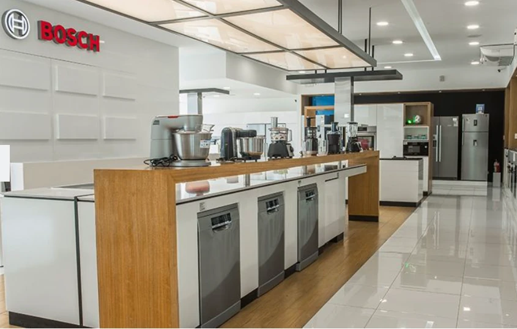

BSH Home Appliances
Gestión de producto y marketing a escala corporativa en BSH (Bosch/Coldex), conectando un amplio portafolio de electrodomésticos con resultados comerciales reales, desde precios y lanzamientos hasta e-commerce y estrategia competitiva.
Desafío y Objetivo
El problema principal era un presupuesto limitado para campañas de lanzamiento de pequeños electrodomésticos e investigación de mercado, en una categoría con fuerte competencia.
El objetivo era aumentar la participación de valor de la línea de pequeños electrodomésticos en tiendas insignia, y sostener los productos de preparación de alimentos como la columna vertebral del negocio (los SKUs más rentables) tanto en canales de venta directa como en distribuidores.
Mi Rol
Mejorar la exhibición del portafolio premium, tanto en tiendas por departamento físicas como en sitios web de marketplace. Liderar el análisis del portafolio y el lanzamiento de nuevos SKUs, manteniendo y mejorando la rentabilidad para hacer crecer la participación de mercado (en valor) en todos los canales.
Ejecución
Fortalecí la percepción premium promoviendo una gama insignia seleccionada, y mejoré el contenido e información (fotos, videos, especificaciones técnicas) en sitios web de retail. Lideré el lanzamiento de una nueva línea de licuadoras y procesadores de alimentos con características tecnológicas atractivas, alineada con un posicionamiento de marca premium.
Resultados
Reemplacé modelos antiguos de licuadoras por una nueva línea más rentable y con mayor atractivo para el cliente moderno. Lideré el relanzamiento del sitio de e-commerce B2B para repuestos y accesorios, que se convirtió en una fuente de ingresos directa tanto para la empresa como para sus distribuidores. La participación de mercado (en valor) en tiendas propias de la compañía subió de 2.7% a 3.5%.
en tiendas propias
en el portafolio
sobre el costo del producto

Aprendizajes
Colaborar de cerca con el equipo técnico para aprovechar el potencial de venta de productos complementarios, y usar marketing digital y medios para ventas, promoción y capacitación del personal, asegura que los objetivos se cumplan mediante un esfuerzo genuinamente multidisciplinario.